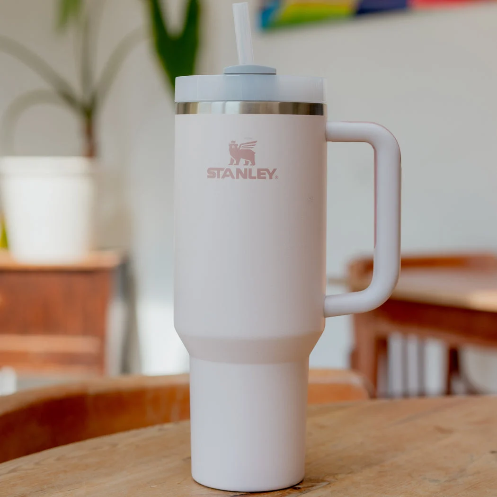
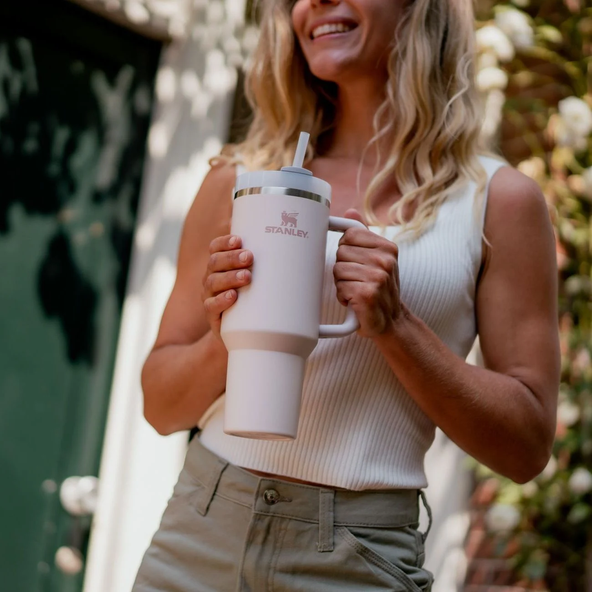
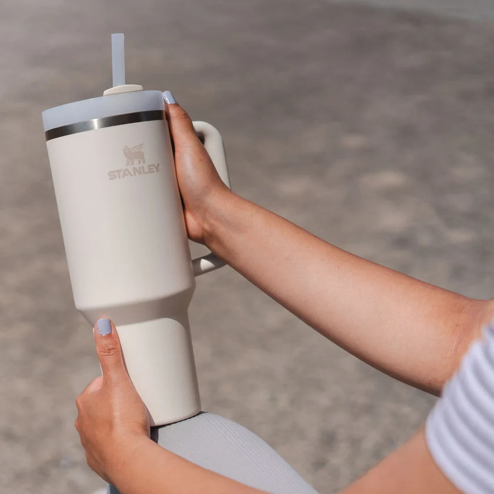
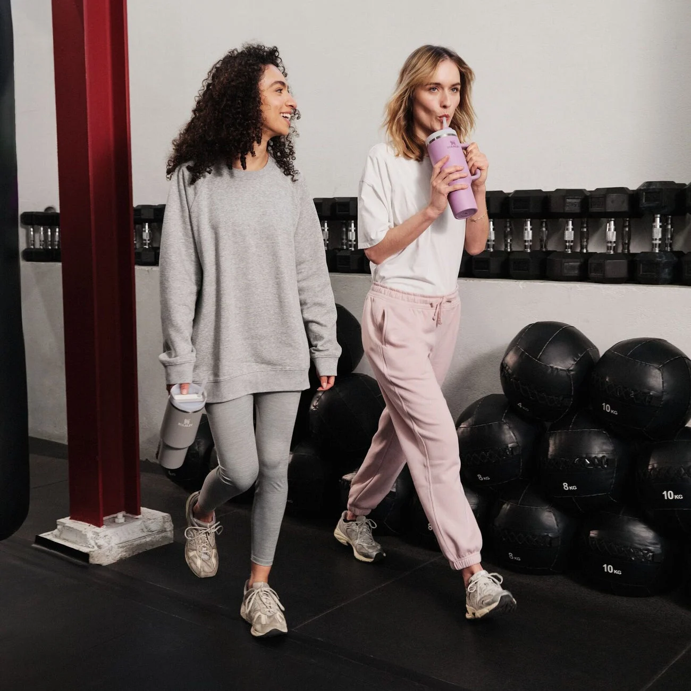
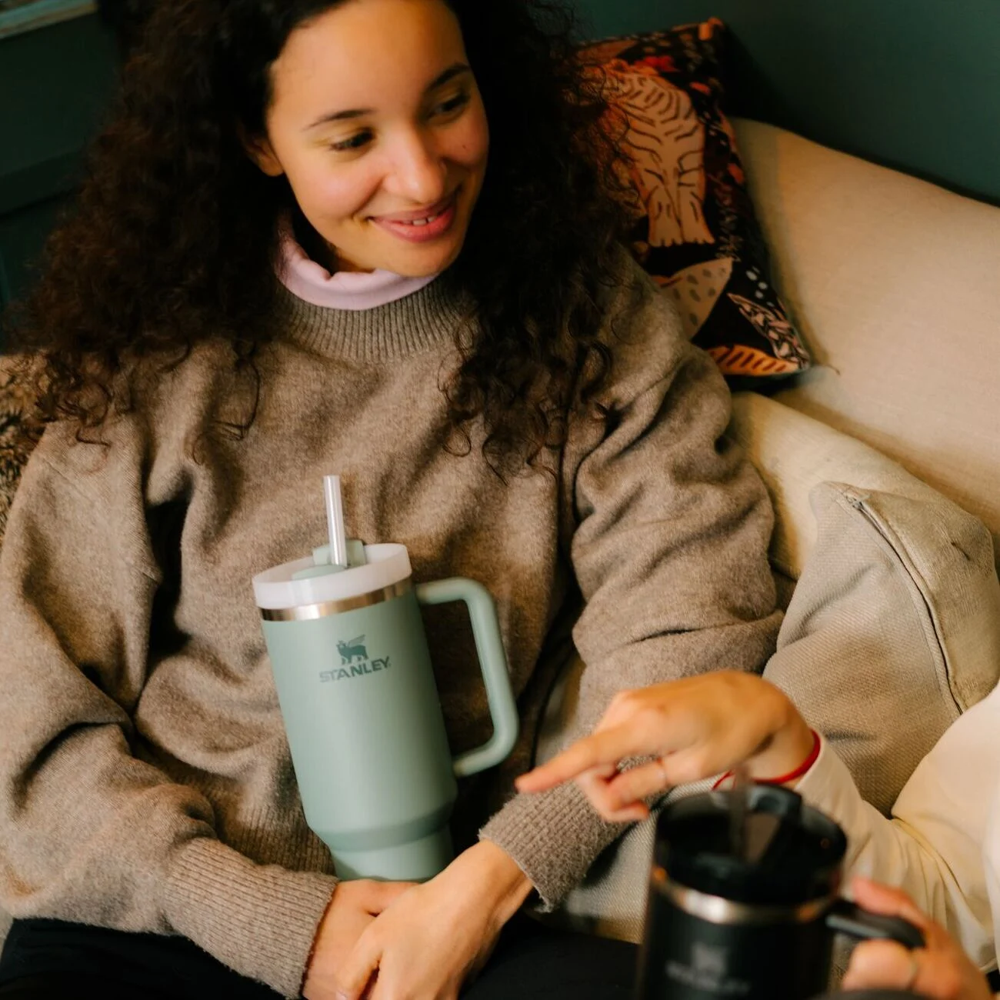
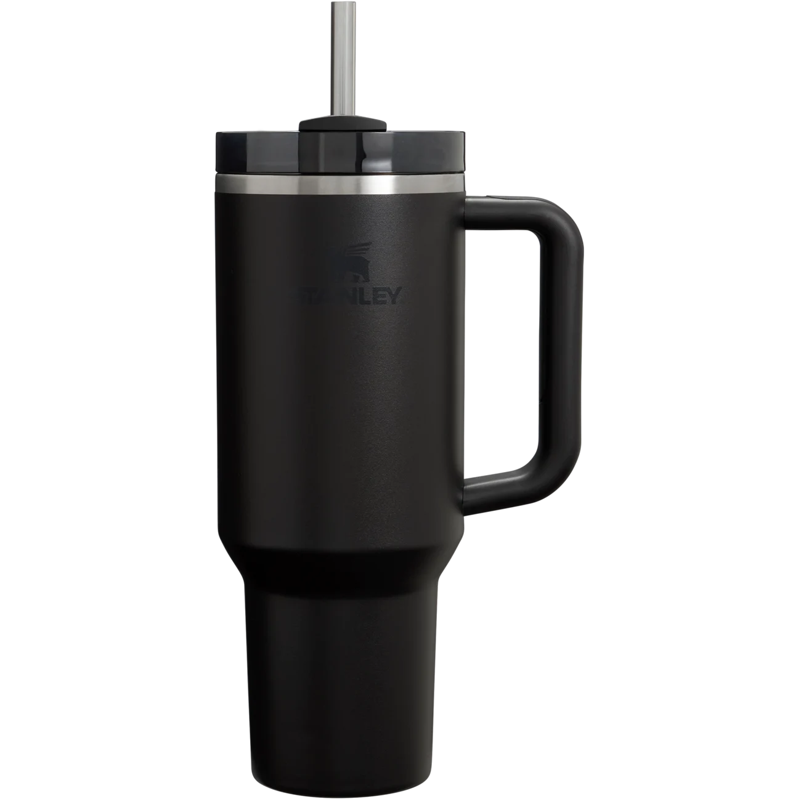
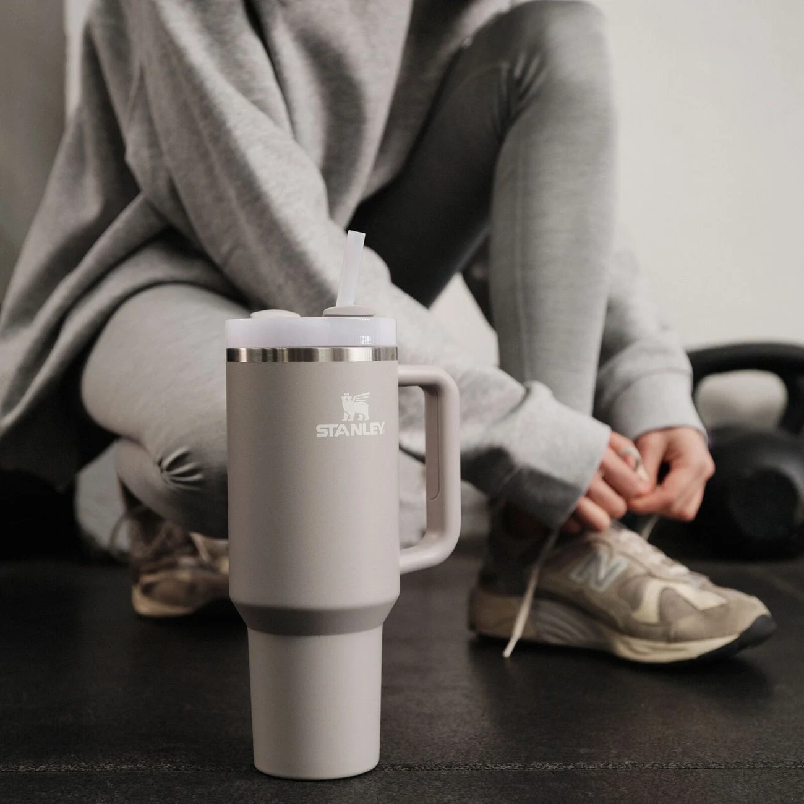

08:00 · SLOW START01 / ANKOMMEN
Zeit für dich.
Bevor der Tag laut wird: durchatmen, einen Schluck trinken und in deinem Tempo starten.
Thermoisolierte Stanley Trinkflaschen und Quencher begleiten dich durchs Büro, Studium, Training und nach draußen – für alle, die viel unterwegs sind.
Entdecke deine Trinkflasche
Weniger müssen. Mehr du sein.Ein Weg durch die Stadt. Eine Pause im Büro oder Studium. Eine Runde draußen. Für jeden Tag gibt es kleine Momente, die sich nach dir anfühlen.




So individuell wie dein Lieblingsoutfit. So selbstverständlich wie dein Morgenritual. Finde den Stanley, der sich nach dir anfühlt.
Deine Farbe: Mitternachtsflow · Black 2.0
Der offizielle Stanley-Shop öffnet sich in einem neuen Tab.
Shop-Farbe: Black 2.0. Preis, Farbe und Verfügbarkeit gelten im Shop.
Kein perfekter Plan nötig.
Nur ein paar Momente, die dir gehören.

08:00 · SLOW STARTBevor der Tag laut wird: durchatmen, einen Schluck trinken und in deinem Tempo starten.
Lauf, Gym oder ein Spaziergang: Beweg dich so, wie es sich für dich gut anfühlt.
Im Zug, auf einer Wanderung oder auf dem Heimweg: Eine kleine Pause passt immer dazwischen.

DESIGNED TO GO WITH YOU.Die Vakuumisolierung hält dein Getränk laut Hersteller bis zu 11 Stunden kalt – vom ersten Termin bis zur Trainingspause.
Der Griff mit Komforteinsätzen liegt gut in der Hand. Dein Getränk bleibt bei dir – unterwegs, im Büro und beim Training.
Laut Hersteller ist der Quencher spülmaschinenfest. So ist er nach deinem Tag unkompliziert wieder bereit.
Die Herstellerangaben beziehen sich auf das verlinkte Quencher-Modell. Produktinformationen vom Hersteller · Stand: 06.11.2026.
Frühaufsteher oder Spätstarter. Büro, Studio oder Stadtpark. Hier ist Platz für deinen ganz eigenen Rhythmus.
Du möchtest wissen, wie sich der Quencher im Alltag bewährt? Entdecke die Kundenbewertungen direkt bei Stanley.
Bewertungen bei StanleyLifestyle-Inspiration mit Herstellerbildern; die abgebildeten Personen sind keine hier zitierten Kundinnen oder Kunden.
Dein Alltag steckt voller Möglichkeiten, dir etwas Gutes zu tun. Nimm dein neues Lieblingsstück mit.
Farbentwurf · Illustration, keine tatsächliche Produktfarbe.
Oder noch einmal deine Farbe wählen.
Der offizielle Stanley-Shop öffnet sich in einem neuen Tab. Preis, Farbe und Verfügbarkeit gelten dort.
Gezeigt ist der Quencher® H2.0 FlowState™. Die Farbauswahl kombiniert Herstellerfarben und gekennzeichnete Farbentwürfe. Größe, Preis und verfügbares Sortiment findest du im offiziellen Stanley-Shop.
Für den Transport solltest du ihn aufrecht halten. Der FlowState-Deckel bietet mehrere Positionen und einen Spritzschutz an der Trinkhalmöffnung; der Quencher ist keine vollständig auslaufsichere Flasche. Für eine liegende Aufbewahrung in der Tasche solltest du ein entsprechend dichtes Modell wählen.
Laut Hersteller sind die Teile dieses Modells für die Spülmaschine geeignet. Beachte außerdem die Pflegehinweise, die deinem Produkt beiliegen.
Die Shop-Buttons öffnen die Produktseite von Stanley in einem neuen Tab. Dort prüfst du die Verfügbarkeit deiner Farbe und siehst die verbindlichen Preise, Versandkosten, Lieferzeiten sowie Rückgabe- und Zahlungsbedingungen.